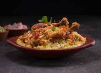

BIRIYANI
Biryani (/bɜːrˈjɑːni/) is a mixed rice dish, mainly popular in South Asia. It is made with rice, some type of meat (chicken, goat, pork, lamb, beef, prawn, or fish) and spices. To cater to vegetarians, in some cases, it is prepared by substituting vegetables or paneer for the meat.[1] Sometimes eggs and/or potatoes are also added.[2]
Biryani is one of the most popular dishes in South Asia and among the South Asian diaspora, although the dish is often associated with the region's Muslim population in particular.[3] Similar dishes are also prepared in other parts of the world such as in Iraq, Myanmar, Thailand, and Malaysia.[4] Biryani is the single most-ordered dish on Indian online food ordering and delivery services, and has been labelled as the most popular dish overall in India.[3][5]
Etymology
Decorative stamp with picture of a biryani served up in a round terracotta pot, labelled "500" in top left corner of stamp and "Biryani" in top right corner
Biryani depicted on a 2017 Indian stamp
One theory states that it originated from birinj (Persian: برنج), the Persian word for rice.[6][7] Another theory states that it is derived from biryan or beriyan (Persian: بریان), which means "to fry" or "to roast".[8][9] It may alternatively be related to the Persian word bereshtan (Persian: برشتن) which also means "to roast (onions)", as the dish is often prepared by flavouring rice with fried onions and meat, besides mild spices.
Origin
North India
The exact origin of the dish is uncertain, however, it is speculated to have originated in Iran. In North India, different varieties of biryani developed.[6][10]
According to historian Lizzie Collingham, the modern biryani developed in the royal kitchens of the Mughal Empire (1526–1857) and is a mix of the native spicy rice dishes of India and the Persian polao.[11] Indian restaurateur Kris Dhillon believes that the dish originated in Persia and was brought to India by the Mughals.[12] Salma Hossein, whom the BBC regards as the "doyenne of Islamic cooking in India", shares a similar view, asserting that biryani came to India from Persia even before the Mughal era. Food scholar Pushpesh Pant also challenges the Mughal-origin claim, stating that it originated in Iran and that "there is no evidence that biryani first came to this land with the Moguls. It is far more probable that it travelled with pilgrims and soldier-statesmen of noble descent to the Deccan region in South India".[13]
Another theory claims that the dish was prepared in India before the first Mughal emperor Babur conquered India.[14] The 16th-century Mughal text Ain-i-Akbari makes no distinction between biryanis and pilaf (or pulao): it states that the word "biryani" is of older usage in India.[citation needed][15] A similar theory, that biryani came to India with Timur's invasion, appears to be incorrect because there is no record of biryani having existed in his native land during that period.[14]
According to Pratibha Karan, who wrote the book Biryani, biryani is of Mughal origin, derived from pilaf varieties brought to the Indian subcontinent by Arab traders. She speculates that the pulao was an army dish in medieval India. Armies would prepare a one-pot dish of rice with whichever meat was available. Over time, the dish became biryani due to different methods of cooking, with the distinction between "pulao" and "biryani" being arbitrary.[6][14]
According to Vishwanath Shenoy, the owner of a biryani restaurant chain in India, one branch of biryani comes from the Mughals, while another was brought by the Arab traders to Malabar in South India.[16]
There are various apocryphal stories dating the invention to Shah Jahan's time but Rana Safvi, the distinguished historian, says she could only find a recipe from the later Mughal period, from Bahadur Shah Zafar's time. It is not her claim that there was no biryani before that; just that she has not found a recipe. Other historians who have gone through texts say that the first references to biryani only appear around the 18th century.[17]
South India
Thalassery Biriyaani, a South Indian Biriyani
Some claim that the dish "oonchoru" as mentioned in Sangam literature, which dates from between 200 BCE and 200 CE, is a predecessor of modern biryani. This dish, which was served to the soldiers of the Chera kings in Kerala, was said to be made of rice, ghee, meat, turmeric, coriander, pepper, and bay leaf.[18][19][20]
The spices utilized in the preparation of South Indian biryanis, such as those used in the Malabar variety, are distinctive to the region and the Western Ghats. These spices are not found in the Middle East, Persia, or North India, underscoring the unique culinary heritage and local ingredients of South Indian biryani.[18][19][20]
In South India, where rice is more widely used as a staple food, several distinct varieties of biryani emerged from Hyderabad in Telangana, Vijayawada in Andhra Pradesh, Mangalore and Bhatkal in Coastal Karnataka, Thalassery and Kozhikode in Malabar Kerala, as well as Ambur and Chettinad in Tamil Nadu.[6][10]
Difference between biryani and pulao
Two biryani accompaniments, mirchi ka salan and raita
Pilaf or pulao, as it is known on the Indian subcontinent, is another mixed rice dish popular in the cuisines of the Indian subcontinent, Central Asia, and Middle Eastern cuisine. Opinions differ on the differences between pulao and biryani, and whether actually there is a difference between the two.[21]
According to Delhi-based historian Sohail Hashmi, pulao tends to be plainer than biryani, and consists of meat or vegetables cooked with rice with the bottom layered with potatoes or onions. Biryani contains more gravy (or yakhni), and is often cooked longer, leaving the meat (and vegetables, if present) more tender, and the rice more flavoured. Biryani is also cooked with additional dressings and often would have a light layer of scorched rice at the bottom.[22]
Author Pratibha Karan states that while the terms are often applied arbitrarily, the main distinction is that a biryani consists of two layers of rice with a layer of meat (and vegetables, if present) in the middle, while the pulao is not layered.[14]
Author Colleen Taylor Sen lists the following distinctions between biryani and pulao:[23]
Biryani is the primary dish in a meal, while the pulao is usually a secondary accompaniment to a larger meal.
In biryani, meat (and vegetables, if present) and rice are cooked separately before being layered and cooked together for the gravy to absorb into the rice. Pulao is a single-pot dish: meat (or vegetables) and rice are cooked separately and they are not mixed. However, some other writers have reported pulao recipes in which the rice and meat are cooked together and then simmered for dum cooking until the liquid is absorbed.[21][24]
Biryanis have more complex and stronger spices compared to pulao.
The British-era author Abdul Halim Sharar mentions that biryani has a stronger taste of curried rice due to a greater amount of spices.[21][25]